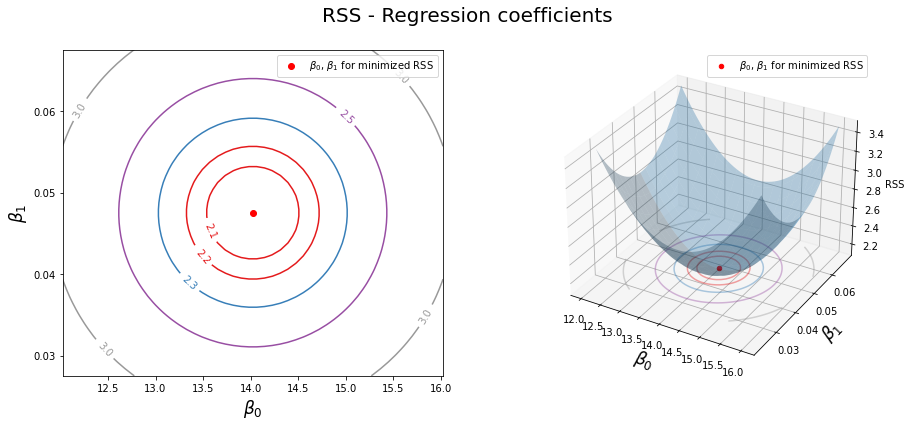

# Import necessary packages
from IPython.display import HTML, Image
import numpy as np
from scipy import linalg as la
from scipy import sparse
import pandas as pd
# import plotting packages
import matplotlib.pyplot as plt
import plotly.graph_objects as go
import plotly.express as px
import pandas as pd
# import sklearn and stats packages
from sklearn.preprocessing import scale
import sklearn.linear_model as skl_lm
from sklearn.metrics import mean_squared_error, r2_score
import statsmodels.api as sm
import statsmodels.formula.api as smf29 MATH 232 - Math Models w/ Tech

29.1 Multiple Linear Regression, Testing & Training Error
29.1.1 Instructor: Prof. Mario Bañuelos
29.2 Outline
30 Multiple Linear Regression
We continue with our linear regression journey, with more than one predictor,
Y \approx \beta_0 + \beta_1 X_1 + \beta_2 X_2 + \ldots + \beta_N X_n,
where \beta_0 is still the intercept and \beta_i (i=1,2,\ldots,n) are the coefficients associated to predictors X_i.
We can also write this as
X \vec{\beta} = \vec{y}
If X is an n \times p matrix, we solve this system by
X^T X \vec{\beta} = X^T \vec{y}\\ \Rightarrow \vec{\beta} = (X^T X)^{-1} X^T \vec{y},
which is the least-squares estimate.
30.0.1 Warm-Up 1 (10-20 min).
Write a function called simulate_mlr (you can modify the simulate_linear code from the previous notebook) that outputs [x1,x2], y - which represents multiple linear simulated data. Then, run the following code to output the 3D scatterplot.
# simulate and plot data
X,Y = simulate_mlr(num=800,b0=3,b1=2,b2=5,random_seed=2)
# 3d figure
fig = go.Figure(data=[go.Scatter3d(
x=X[0],
y=X[1],
z=Y,
mode='markers'
)])--------------------------------------------------------------------------- NameError Traceback (most recent call last) <ipython-input-2-5040a7ecdb6e> in <module> 1 # simulate and plot data ----> 2 X,Y = simulate_mlr(num=800,b0=3,b1=2,b2=5,random_seed=2) 3 4 # 3d figure 5 fig = go.Figure(data=[go.Scatter3d( NameError: name 'simulate_mlr' is not defined
fig.show()30.1 Advertising Data
Make sure that you have downloaded the Advertising data before continuing.
advert = pd.read_csv('Advertising.csv', usecols=[1,2,3,4])
advert.info()<class 'pandas.core.frame.DataFrame'>
RangeIndex: 200 entries, 0 to 199
Data columns (total 4 columns):
# Column Non-Null Count Dtype
--- ------ -------------- -----
0 TV 200 non-null float64
1 radio 200 non-null float64
2 newspaper 200 non-null float64
3 sales 200 non-null float64
dtypes: float64(4)
memory usage: 6.4 KBadvert| TV | radio | newspaper | sales | |
|---|---|---|---|---|
| 0 | 230.1 | 37.8 | 69.2 | 22.1 |
| 1 | 44.5 | 39.3 | 45.1 | 10.4 |
| 2 | 17.2 | 45.9 | 69.3 | 9.3 |
| 3 | 151.5 | 41.3 | 58.5 | 18.5 |
| 4 | 180.8 | 10.8 | 58.4 | 12.9 |
| ... | ... | ... | ... | ... |
| 195 | 38.2 | 3.7 | 13.8 | 7.6 |
| 196 | 94.2 | 4.9 | 8.1 | 9.7 |
| 197 | 177.0 | 9.3 | 6.4 | 12.8 |
| 198 | 283.6 | 42.0 | 66.2 | 25.5 |
| 199 | 232.1 | 8.6 | 8.7 | 13.4 |
200 rows × 4 columns
advert.TV0 230.1
1 44.5
2 17.2
3 151.5
4 180.8
...
195 38.2
196 94.2
197 177.0
198 283.6
199 232.1
Name: TV, Length: 200, dtype: float64# Simple Linear Regression (Ordinary Least Squares)
# instantiate the model
regr = skl_lm.LinearRegression()
# rescale TV column by subtracting mean
X = scale(advert.TV, with_mean=True, with_std=False).reshape(-1,1)
y = advert.sales
# fit regression model with data and print estimated betas
regr.fit(X,y)
print(regr.intercept_)
print(regr.coef_)14.0225
[0.04753664]# Create grid coordinates for plotting
B0 = np.linspace(regr.intercept_-2, regr.intercept_+2, 50)
B1 = np.linspace(regr.coef_-0.02, regr.coef_+0.02, 50)
# create a grid based on B0 and B1
xx, yy = np.meshgrid(B0, B1, indexing='xy')
Z = np.zeros((B0.size,B1.size))
# Calculate Z-values (RSS) based on grid of coefficients
for (i,j),v in np.ndenumerate(Z):
Z[i,j] =((y - (xx[i,j]+X.ravel()*yy[i,j]))**2).sum()/1000
# Minimized RSS
min_RSS = r'$\beta_0$, $\beta_1$ for minimized RSS'
min_rss = np.sum((regr.intercept_+regr.coef_*X - y.values.reshape(-1,1))**2)/1000
min_rss2.1025305831313514import matplotlib.pyplot as plt
from mpl_toolkits.mplot3d import axes3d
import seaborn as sns
fig = plt.figure(figsize=(15,6))
fig.suptitle('RSS - Regression coefficients', fontsize=20)
ax1 = fig.add_subplot(121)
ax2 = fig.add_subplot(122, projection='3d')
# Left plot
CS = ax1.contour(xx, yy, Z, cmap=plt.cm.Set1, levels=[2.15, 2.2, 2.3, 2.5, 3])
ax1.scatter(regr.intercept_, regr.coef_[0], c='r', label=min_RSS)
ax1.clabel(CS, inline=True, fontsize=10, fmt='%1.1f')
# Right plot
ax2.plot_surface(xx, yy, Z, rstride=3, cstride=3, alpha=0.3)
ax2.contour(xx, yy, Z, zdir='z', offset=Z.min(), cmap=plt.cm.Set1,
alpha=0.4, levels=[2.15, 2.2, 2.3, 2.5, 3])
ax2.scatter3D(regr.intercept_, regr.coef_[0], min_rss, c='r', label=min_RSS)
ax2.set_zlabel('RSS')
ax2.set_zlim(Z.min(),Z.max())
ax2.set_ylim(0.02,0.07)
# settings common to both plots
for ax in fig.axes:
ax.set_xlabel(r'$\beta_0$', fontsize=17)
ax.set_ylabel(r'$\beta_1$', fontsize=17)
ax.set_yticks([0.03,0.04,0.05,0.06])
ax.legend()
advert.sales0 22.1
1 10.4
2 9.3
3 18.5
4 12.9
...
195 7.6
196 9.7
197 12.8
198 25.5
199 13.4
Name: sales, Length: 200, dtype: float64est = smf.ols('sales ~ radio', advert).fit()
est.summary().tables[1]| coef | std err | t | P>|t| | [0.025 | 0.975] | |
|---|---|---|---|---|---|---|
| Intercept | 9.3116 | 0.563 | 16.542 | 0.000 | 8.202 | 10.422 |
| radio | 0.2025 | 0.020 | 9.921 | 0.000 | 0.162 | 0.243 |
# RSS with regression coefficients
((advert.sales - (est.params[0] + est.params[1]*advert.radio))**2).sum()/10003.618479549025088est2 = smf.ols('sales ~ radio + TV', advert).fit()
est2.summary().tables[1]| coef | std err | t | P>|t| | [0.025 | 0.975] | |
|---|---|---|---|---|---|---|
| Intercept | 2.9211 | 0.294 | 9.919 | 0.000 | 2.340 | 3.502 |
| radio | 0.1880 | 0.008 | 23.382 | 0.000 | 0.172 | 0.204 |
| TV | 0.0458 | 0.001 | 32.909 | 0.000 | 0.043 | 0.048 |
31 Assessing Model Accuracy
In multiple regression settings, we can use the residual sum of squares (RSS) (generally known as the loss function \mathcal{L}), which is defined similarly as before
\mathcal{L} = RSS = \sum^{n}_{i=1} \left( y_i - \hat{y_i}\right)^2 = \sum^{n}_{i=1} \left( y_i - \hat{f}(x_i)\right)^2
where \hat{f}(x_i) is the prediction that \hat{f} gives for the ith observation.
Goal: Minimize the RSS!
31.0.1 Practice / Discussion
Create the best multiple linear regression model.